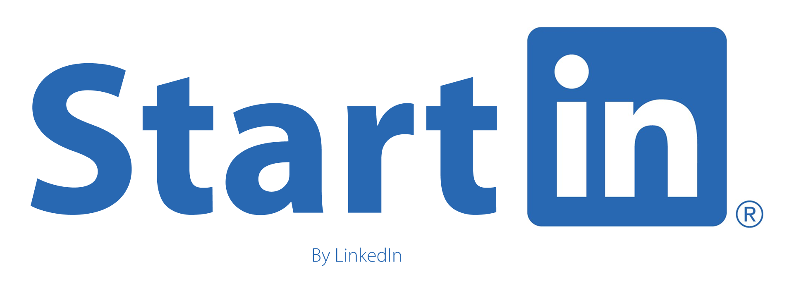
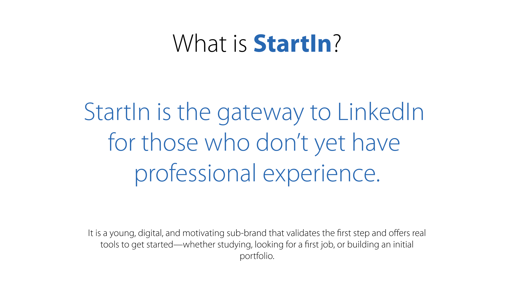
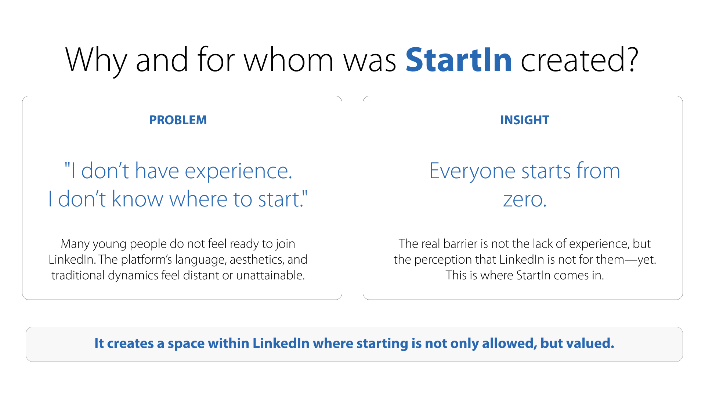
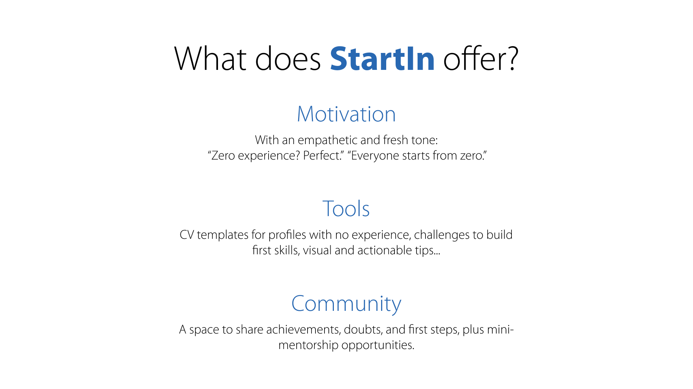
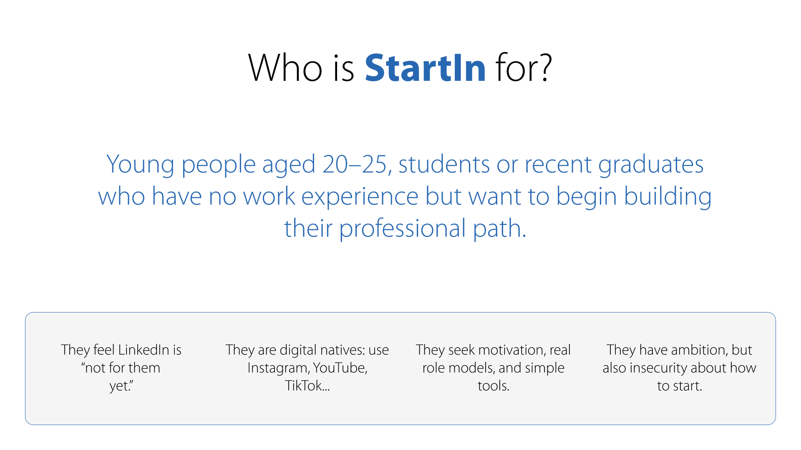
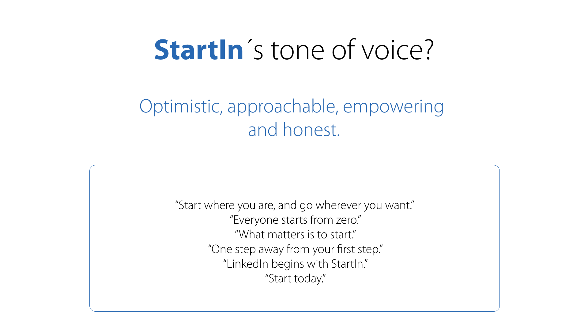
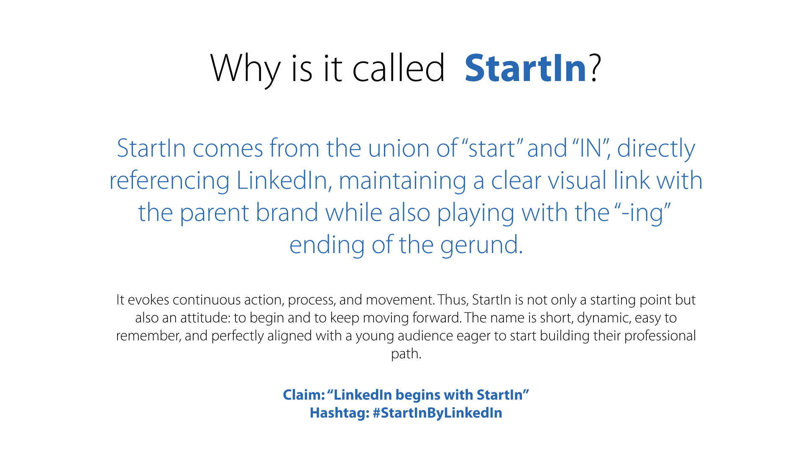
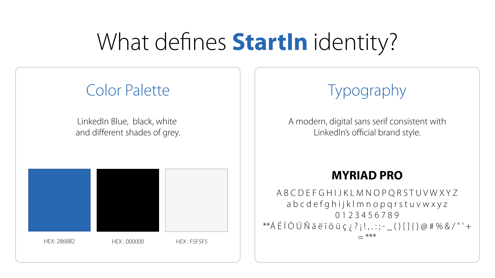
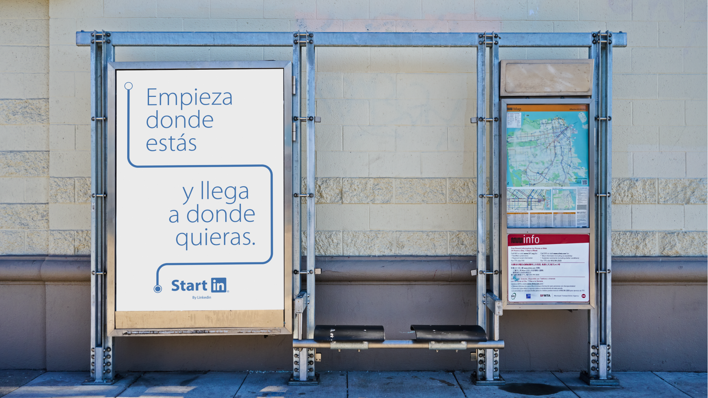
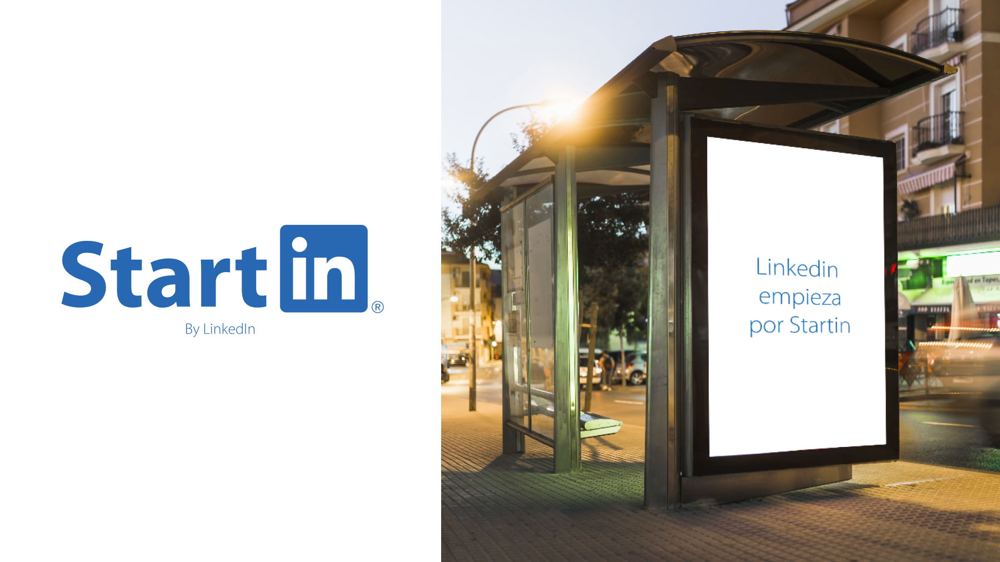

StartIn
StartIn is a conceptual corporate design project where I conceptualized a strategic sub-brand for LinkedIn aimed at students and recent graduates with little or no professional experience. The project covers brand creation from concept to visual and verbal identity, crafting a fresh, motivating name, tone, and visual system aligned with LinkedIn’s style. StartIn makes LinkedIn approachable and empowering, providing tools and guidance for first professional steps while showing how corporate design can create meaningful brand experiences.









